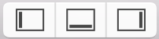

Use the configuration buttons () on the right of the toolbar to show or hide the optional areas in the main window: navigator area, inspector area, and debug area.
Show or hide the navigator area: Click the left button ( ).
).
Show or hide the inspector area: Click the right button ( ).
).
Show or hide the debug area: Click the middle button ( ).
).